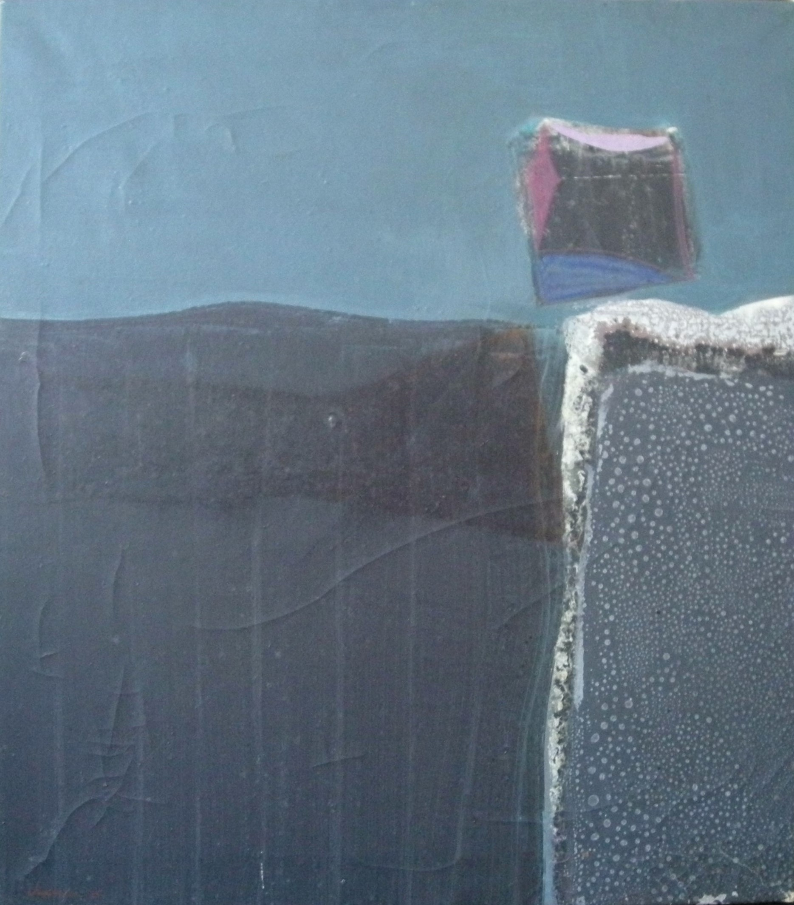

Max Chapman
1911 – 1999
Artist Biography
Max Chapman was born in London and attended Byam Shaw Art School 1927-30. After taking a studio in Newlyn, Cornwall in the 1930s he later returned to London where his pacifism and homosexuality were better accepted. He had a varied career as an artist and as a critic and illustrator, but achieved his most sublime results in his abstract phase from the 1950s-1970s. A close artistic collaborator with his lover Oswell Blakeston, Chapman was a committed innovator who experimented with new media and invented collage noye. A denizen of Soho at its most Bohemian, Chapman had solo shows at Storran, Leger, Molton, Leicester Galleries, Camden Arts Centre and New Vision Centre Gallery in London and also at galleries in Zurich and Paris. There was a selective retrospective at Middlesborough Art Gallery in 1981, where Blakeston’s work was also featured. A painting from Chapman’s 1961 solo show at New Vision was also shown at Bede Gallery, Jarrow’s 1984 retrospective assessing the New Vision Gallery’s influence.

Untitled, 1975